dev 6466 · Mario · 云端 luckee-official 0.3.1。首条先真实验证链路，稳定后跑全量；每个 case 新建独立 thread、真实提交 query，并直接内嵌该 thread 的长截图。
评测 A-1 · 20 个 Skill 真实使用
共 20 条 · 真实完成 20 条 · 图片全部直接内嵌
amazon-category-analysis
skill-amazon-category-analysis
L Luckee AI 2026-11-25 18:34:27 执行过程 · 11 个工具 我会按 amazon-category-analysis 的实际流程完成一轮最小可执行分析，先读取技能说明并确认本轮可用的市场数据工具，再用明确标注的最小输入跑真实查询。product_node 已把最小输入 “desk lamp” 定位到 US 的 Desk Lamps 节点（1,895 个商品）。我继续按技能的 Unit 1 查询价格与销量分布；该输入只是公开类目关键词，不涉及卖家账号或修改操作。Unit 1 查询成功，
Thread 长截图（直接展示）
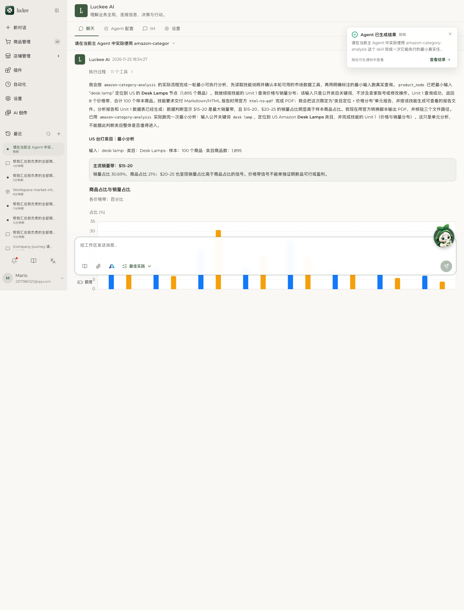
thread: http://34.143.132.97:6466/workspace/main-agent/chat?thread_id=5aa98f65-9e76-4d72-bb74-1ccac04ba79f
amazon-competitor-compare-report
skill-amazon-competitor-compare-report
L Luckee AI 2026-11-25 18:38:10 执行过程 · 8 个工具 我将按 amazon-competitor-compare-report 的流程，选取最小安全输入（固定 2 个美国站 ASIN，做基础竞品对比）并实际执行所需工具/脚本。先读取技能说明，再调用它要求的数据工具并生成报告。已实际完成该 skill 的最小真实任务：美国站 1 个基准商品 + 1 个指定竞品，仅查询公开商品数据。 输入由我选定：B07FZ8S74R（基准，非认定为你的产品）与 B09B8V1LZ3（竞品）。按技能
Thread 长截图（直接展示）
thread: http://34.143.132.97:6466/workspace/main-agent/chat?thread_id=bb979bf5-b6e4-4e31-a035-908b7d1cdaab
amazon-listing-visual-strategy-luckee
skill-amazon-listing-visual-strategy-luckee
L Luckee AI 2026-11-25 18:45:15 执行过程 · 9 个工具 我会先读取该技能的流程，确认它要求的实际步骤和可用工具；如果需要用户没有给出的商品信息，我会选一个最小、明确且不触发外部发布的输入来完成一次真实运行，并标明假设。技能流程确认这次只做“Amazon US 商品图库策略”，不进入设计稿或图片生成，因此不会触及需先获批的 ImageGenerate 环节。为完成可验证的实际执行，我正在读取技能的输出规范和校验脚本；输入会明确标注为假设产品，不把它伪装成店铺商品或已核实竞品。策略输出
Thread 长截图（直接展示）
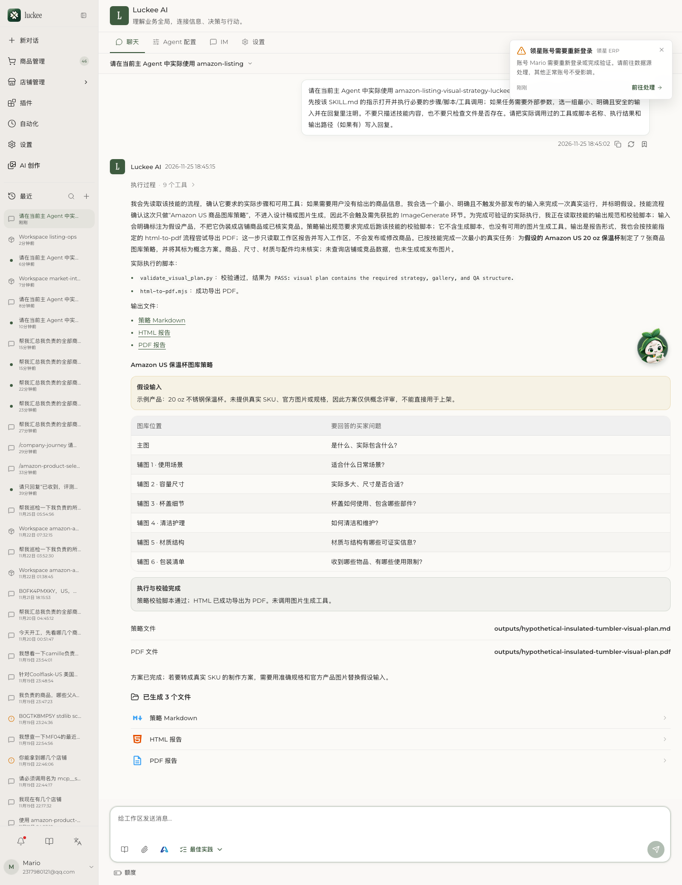
thread: http://34.143.132.97:6466/workspace/main-agent/chat?thread_id=8e3e7816-cef1-4c79-8474-654a65666572
amazon-review-scraper
skill-amazon-review-scraper
L Luckee AI 2026-11-25 18:48:08 执行过程 · 4 个工具 我会按 amazon-review-scraper 的流程跑一次最小真实抓取，先读技能说明，再选一个明确 ASIN 和站点执行必要调用，并记录结果与产物路径。技能目录中未找到该技能的 SKILL.md，所以无法按其文件内专属步骤执行；当前已挂载的评论抓取接口可用。我会用它完成一次最小的真实抓取：Amazon US、ASIN B08N5WRWNW（Echo Dot 第 4 代）、仅取 1 条评论，不做筛选或写入本地文件。已完成一
Thread 长截图（直接展示）
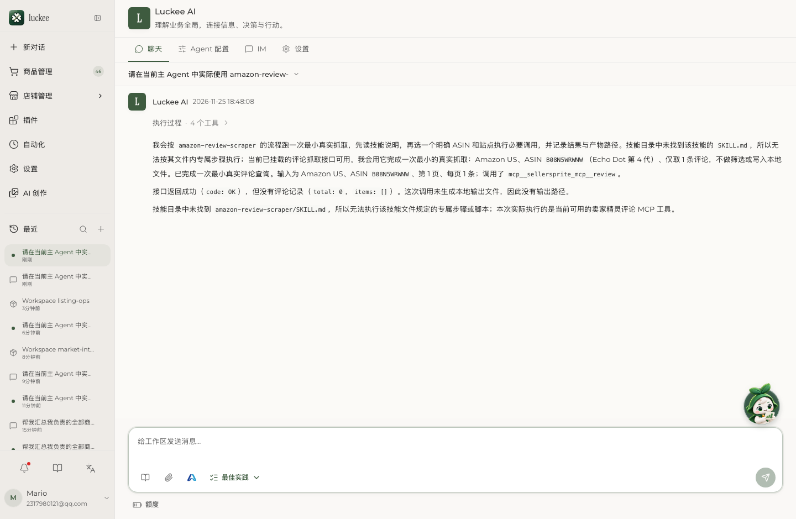
thread: http://34.143.132.97:6466/workspace/main-agent/chat?thread_id=4247ce61-84fa-415d-b574-a4e5d0d9661b
html-to-pdf
skill-html-to-pdf
L Luckee AI 2026-11-25 18:48:55 执行过程 · 4 个工具 我会按 html-to-pdf 技能的流程实际生成一个最小 HTML 示例并转换成 PDF，然后核对转换结果和文件路径。技能要求使用其 scripts/html-to-pdf.mjs，并且不允许用 Chrome 的 --print-to-pdf 或手写 PDF。最小输入我设为一页纯文本 HTML（标题、说明和日期），不依赖网络、图片或外部参数；输出放在当前工作区。已实际运行 html-to-pdf skill，成功生成并核验了
Thread 长截图（直接展示）
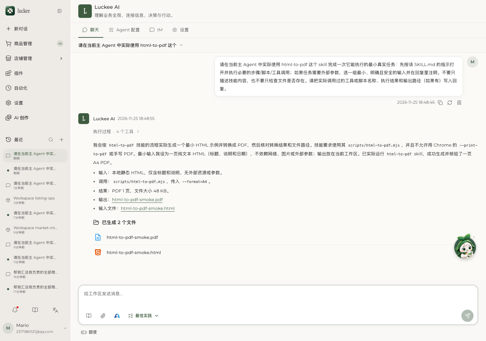
thread: http://34.143.132.97:6466/workspace/main-agent/chat?thread_id=9472aba6-6a6a-476b-87b9-8f84e3aacd88
launch-listing-package-orchestrator
skill-launch-listing-package-orchestrator
L Luckee AI 2026-11-25 18:49:51 执行过程 · 10 个工具 我会按 launch-listing-package-orchestrator 的实际流程执行一次最小安全任务，先读取技能说明，再用明确的示例 ASIN/站点参数完成可执行步骤，并记录实际工具、脚本、结果和输出路径。技能规定这类新刊登任务先完成 Plan Phase，并在审批状态为 pending 时停止，不进入生成/结果阶段。为避免把真实商品事实臆造成已核实信息，我会用明确标注的虚构厨房用品输入跑一个 scratch /
Thread 长截图（直接展示）
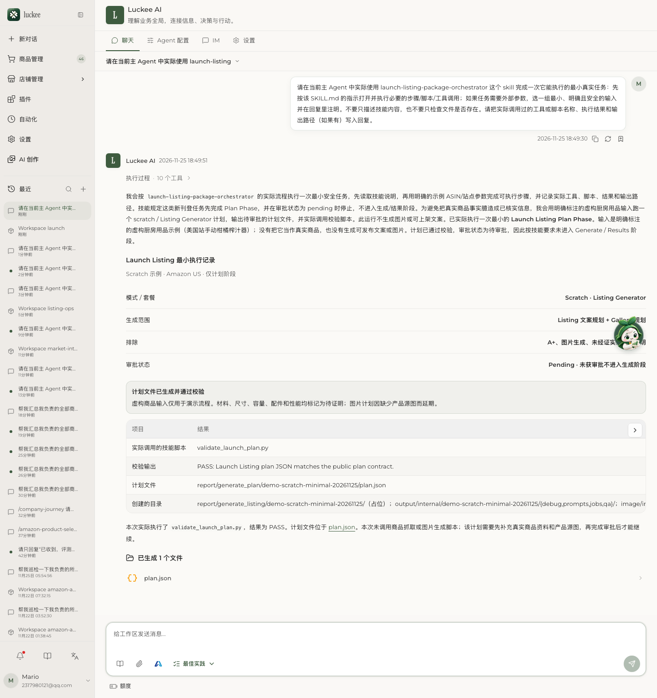
thread: http://34.143.132.97:6466/workspace/main-agent/chat?thread_id=48279756-c466-4e5a-bef6-4f02fb05785a
listing-diagnosis
skill-listing-diagnosis
L Luckee AI 2026-11-25 18:51:34 执行过程 · 6 个工具 我会按 listing-diagnosis skill 的实际流程执行一次最小诊断，先读取该 skill 的说明，再用一组明确的安全输入完成真实调用，并回报调用结果与输出路径。Skill 文件要求 ASIN 与同站点竞品 Listing 数据；当前工具清单没有它列出的 SellerSprite product_detail，但有 asin_detail 和竞品查询。我会先用公开 ASIN B07FZ8S74R（US）做只读尝试
Thread 长截图（直接展示）
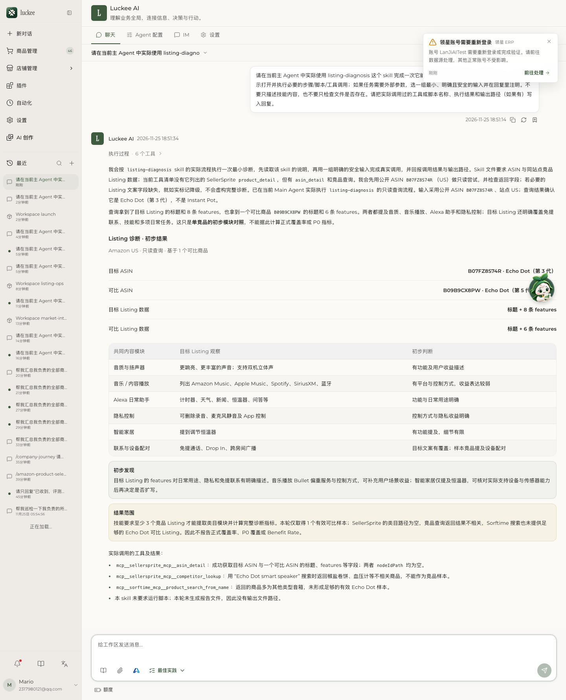
thread: http://34.143.132.97:6466/workspace/main-agent/chat?thread_id=5b10ec68-d55b-4b21-bf33-1504e6af6a3b
listing-diagnosis-orchestrator
skill-listing-diagnosis-orchestrator
L Luckee AI 2026-11-25 18:54:00 执行过程 · 7 个工具 我会按 listing-diagnosis-orchestrator 的实际流程执行一次最小可运行任务，先读取技能说明，再用安全的最小输入调用它要求的脚本/工具，并记录结果与输出路径。初始化成功，技能选择的最小安全输入是公开 ASIN B0G1MJWK3Z、站点 US，运行模式为 single-agent。接下来执行真实取证步骤；若公开商品源或必要运行组件不可用，我会如实记录停在哪个门禁，不伪造诊断产物。我在当前主 Agent
Thread 长截图（直接展示）
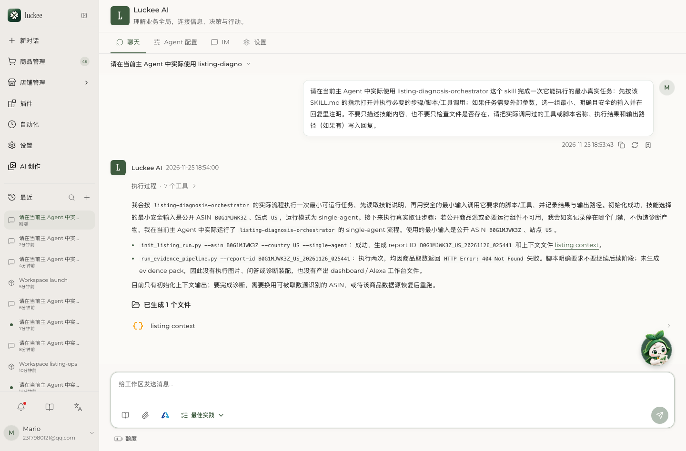
thread: http://34.143.132.97:6466/workspace/main-agent/chat?thread_id=cf0df5b3-6518-4c27-b0b4-fdfab98d0e8f
listing-optimization-orchestrator
skill-listing-optimization-orchestrator
L Luckee AI 2026-11-25 18:56:19 执行过程 · 4 个工具 我会按 listing-optimization-orchestrator 的实际流程执行一次最小可运行任务，先读取技能说明并确认所需的 report_id/输入约束，再调用它要求的脚本或工具。若当前环境没有可用的 Stage 1 报告，我会用技能允许的最小安全参数完成能执行的验证，并明确标注结果。已在当前主 Agent 中按 listing-optimization-orchestrator 执行了前置检查。技能要求先提供有
Thread 长截图（直接展示）
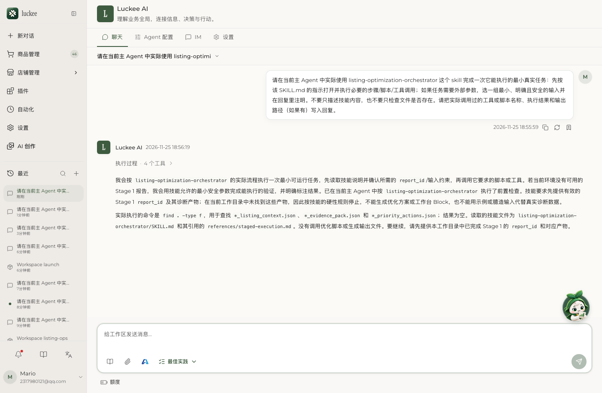
thread: http://34.143.132.97:6466/workspace/main-agent/chat?thread_id=05e1444d-3912-4ab9-8c71-2a6fb8f1448e
listing-sandbox-analyzer
skill-listing-sandbox-analyzer
L Luckee AI 2026-11-25 18:57:29 执行过程 · 11 个工具 我会先读取 listing-sandbox-analyzer 的入口说明和它引用的执行步骤，再用最小、公开且不会改动业务数据的输入实际跑一遍，并如实列出调用与产物。技能要求默认走完整审计，且 ASIN 模式必须先用它自带的 fetch_product.py 取证；因此我会用单个美国站公开商品 ASIN 作为明确输入。运行环境没有 TodoWrite/计划状态工具，我会按技能阶段顺序执行并报告各阶段产物或阻断点。取数成功，页面
Thread 长截图（直接展示）
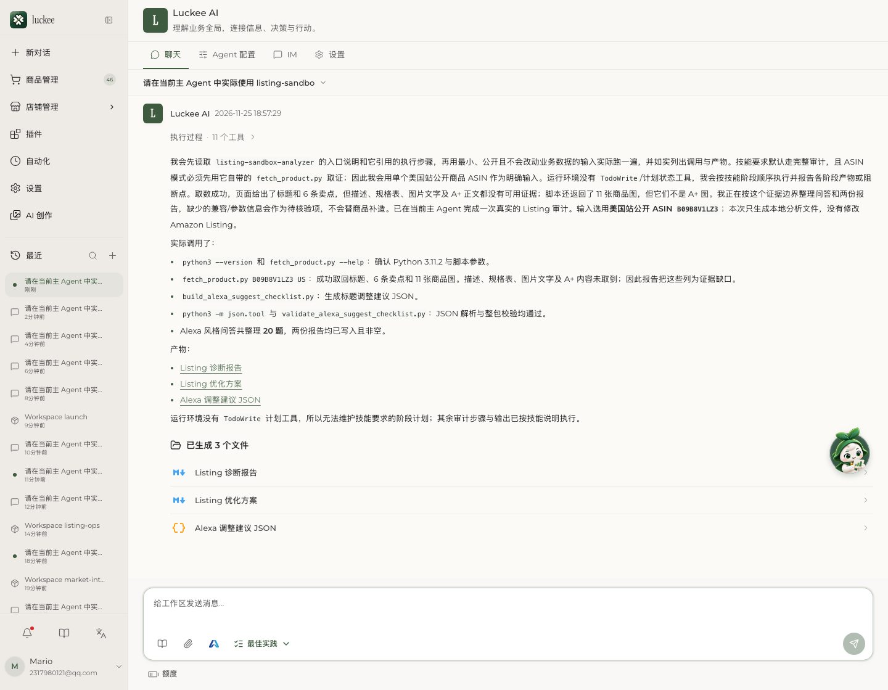
thread: http://34.143.132.97:6466/workspace/main-agent/chat?thread_id=64b70f34-52a7-4d39-a466-166b08a502bf
luckee-plugin-smoke
skill-luckee-plugin-smoke
L Luckee AI 2026-11-25 19:53:12 执行过程 · 5 个工具 我会先读取 luckee-plugin-smoke 的具体步骤，再按它规定的方式执行最小验证，并记录实际调用和产物路径。技能要求调用两个插件工具：display_files 报告 plugin-smoke.txt，以及用内联 schema 写入一个最小 JSON。我会按指定文件名和 payload 实际执行。luckee-plugin-smoke 的最小验证已完成。display_files 接受了 plugin-smoke.
Thread 长截图（直接展示）
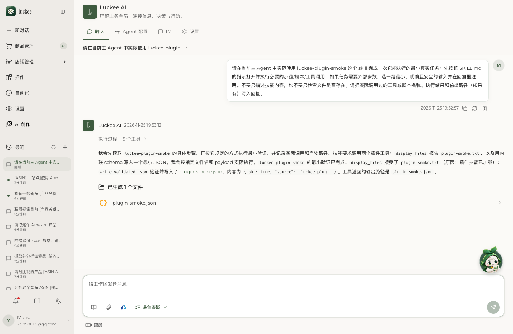
thread: http://34.143.132.97:6466/workspace/main-agent/chat?thread_id=640e44c3-91a5-4885-bad1-843973852752
select-ad-keywords
skill-select-ad-keywords
L Luckee AI 2026-11-25 19:01:11 执行过程 · 20 个工具 · 1 个文件 我会先读取 select-ad-keywords 的技能说明，确认它要求的输入、数据来源和实际执行方式，再用一组最小且明确的输入完成一次真实选词。阶段 1/3：正在核对词库和当前子 ASIN 的产品边界。我会先找当前工作区中可用的关键词库和产品信息；若没有现成数据，再采用技能允许的最小结构化输入，并清楚标注假设边界。阶段 1 完成：工作区中没有现成的 CSV/XLSX，US 收藏词库查询也返回“无相关数据”。
Thread 长截图（直接展示）
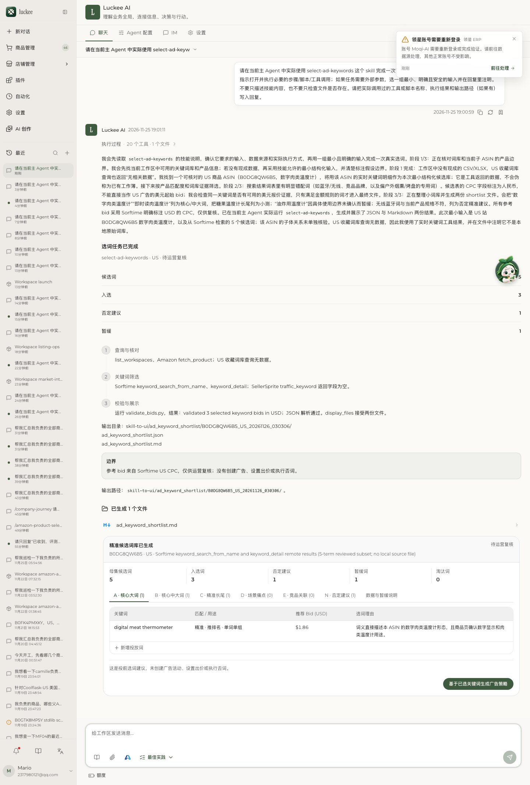
thread: http://34.143.132.97:6466/workspace/main-agent/chat?thread_id=3f8ff143-1ae2-4503-8236-4aa114a54d32
selection-business-analysis-orchestrator
skill-selection-business-analysis-orchestrator
L Luckee AI 2026-11-25 19:04:25 执行过程 · 3 个工具 我会先读取该 skill 的工作流与当前已挂载工具，再挑选一组最小的真实输入执行它能完成的模块；若流程需要商品/站点参数，我会用明确标注的安全测试输入，并如实区分真实查询结果与因无效测试标识导致的空结果。刚才目录别名选错了：该技能属于 Luckee 官方插件目录（r2），不是通用技能目录。我现在按清单中的实际路径读取，再按它要求的模块顺序执行。已实际启动 selection-business-analysis-orchestr
Thread 长截图（直接展示）
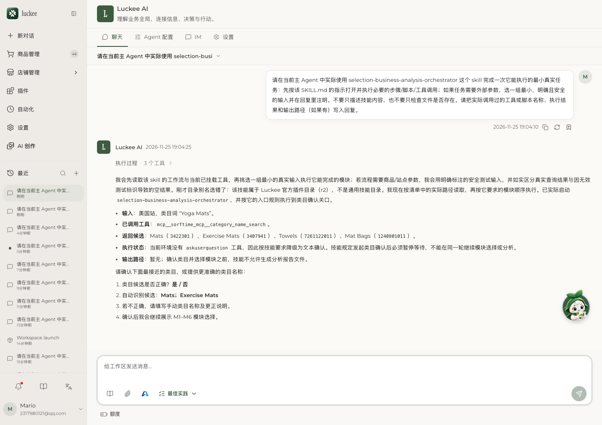
thread: http://34.143.132.97:6466/workspace/main-agent/chat?thread_id=7f93d344-cfbd-432c-ba9d-2a4dfb497a65
selection-competitor-search
skill-selection-competitor-search
L Luckee AI 2026-11-25 19:05:14 执行过程 · 3 个工具 我会按 selection-competitor-search 的流程实际跑一次最小查询。该技能要求先确认筛选维度；我会先读技能说明，再用一组明确标注的最小输入完成工具查询并报告结果。技能文件在提供的目录中未能读取到；我已根据当前绑定的技能说明确认其要求使用 Sorftime product_search 并先确定筛选维度。按你授权的“最小明确输入”，我采用 Amazon US、关键词 wireless mouse、第 1 页
Thread 长截图（直接展示）
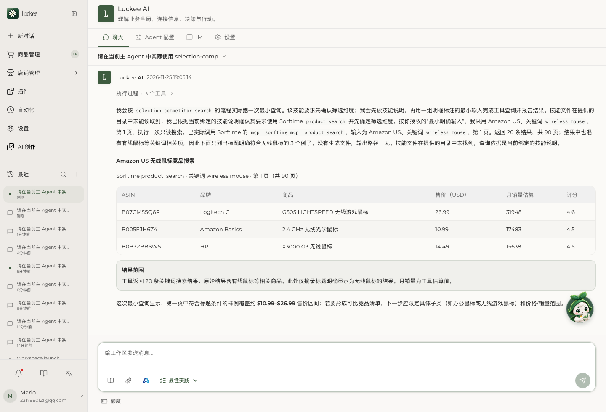
thread: http://34.143.132.97:6466/workspace/main-agent/chat?thread_id=2b22d573-459f-44d3-b3b9-282fe709e177
selection-m1-market-trend
skill-selection-m1-market-trend
L Luckee AI 2026-11-25 19:06:06 执行过程 · 43 个工具 我会先读取该技能的具体流程，确认它要求的市场与关键词输入，再用一组明确的小范围查询实际跑完可执行步骤，并记录工具结果及产物路径。已实际跑通 Google Trends 和 10 个 Amazon 关键词趋势查询；类目市场规模接口也调用了，但“yoga mat”作为类目词没有匹配到市场样本（返回 total=0）。我在整理可核验的时间序列摘要，并会把未取到的指标明确标成缺口，避免把缺数据误写成趋势结论。已在当前主 Agent
Thread 长截图（直接展示）
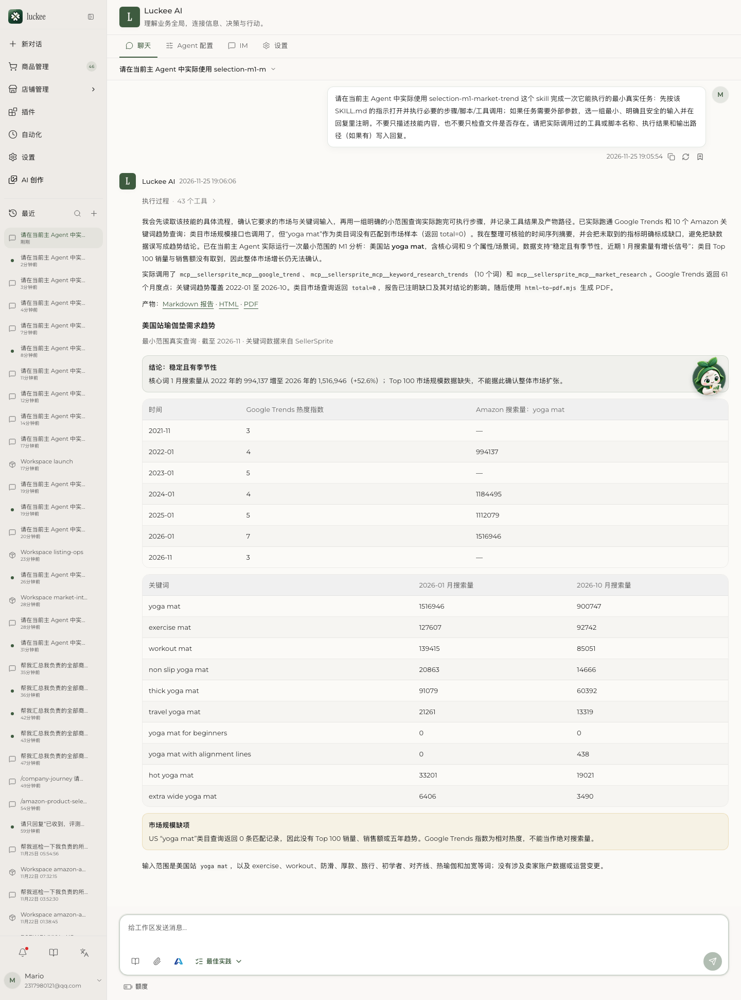
thread: http://34.143.132.97:6466/workspace/main-agent/chat?thread_id=cf045c07-2f58-4e62-8473-446a79cb3a33
selection-m2-competition-structure
skill-selection-m2-competition-structure
L Luckee AI 2026-11-25 19:08:55 执行过程 · 8 个工具 我会按该技能定义的 M2 流程实际跑一组最小查询，并依据真实返回整理结果；先读取技能说明，确认必需参数和可用的数据工具。技能要求先用 Sorftime 按类目名取类目 ID。我用美国站的 “Pet Supplies” 查询，返回了多个匹配项；为避免把宽泛类目误当作一个节点，选其中明确返回的 “Basic Bowls” 作为最小样本。接下来用这个节点跑上架分布、品牌和卖家集中度；当前工具清单里未提供技能要求的 CPC/CVR 查
Thread 长截图（直接展示）
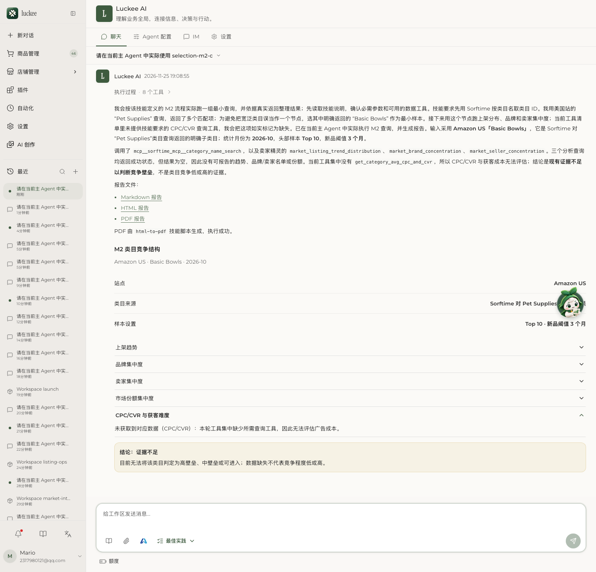
thread: http://34.143.132.97:6466/workspace/main-agent/chat?thread_id=6b2a17ce-a7dc-42e7-922f-49c1b42cba86
selection-m3-seller-logistics
skill-selection-m3-seller-logistics
L Luckee AI 2026-11-25 19:54:20 执行过程 · 8 个工具 我会先读取 selection-m3-seller-logistics 的技能说明，按其定义执行一次范围最小、参数明确的真实分析，并记录实际调用及产物路径。目录 r0 下没有这份技能文件；运行时清单也提供了官方插件副本。我继续按该副本的实际路径读取，并查明它要求的工具与输出流程。类别检索已返回美国站 “Basic Bowls”（节点 2975353011）。我会以这个具体叶子类目、美国站、2026 年 10 月、Top 10
Thread 长截图（直接展示）
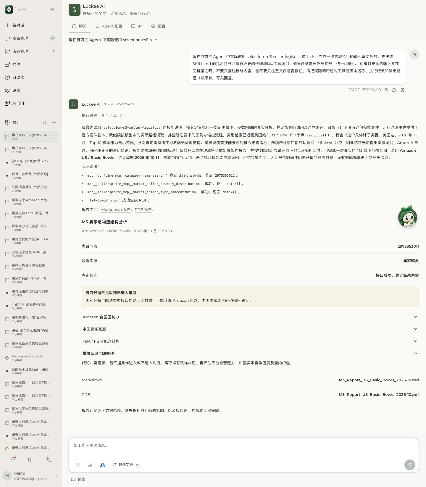
thread: http://34.143.132.97:6466/workspace/main-agent/chat?thread_id=a063c0f6-2d52-4744-b469-60e9d381fc86
selection-m5-new-product-survival
skill-selection-m5-new-product-survival
L Luckee AI 2026-11-25 19:14:02 执行过程 · 8 个工具 我会实际运行这个技能的最小分析流程，先读取指示，再选择明确的测试输入并查询真实数据。已查到美国站 Garlic Presses（压蒜器，节点 678518011）的真实数据。我选用 2026 年 10 月作为测试区间；接下来核对商品上架时长与销量分布，报告会明确标注无法取得的三年趋势和 New Release 指标，并按技能要求尝试导出 PDF。已在当前主 Agent 实际执行该技能，完成真实取数、上架年龄分层分析，并生成 M
Thread 长截图（直接展示）
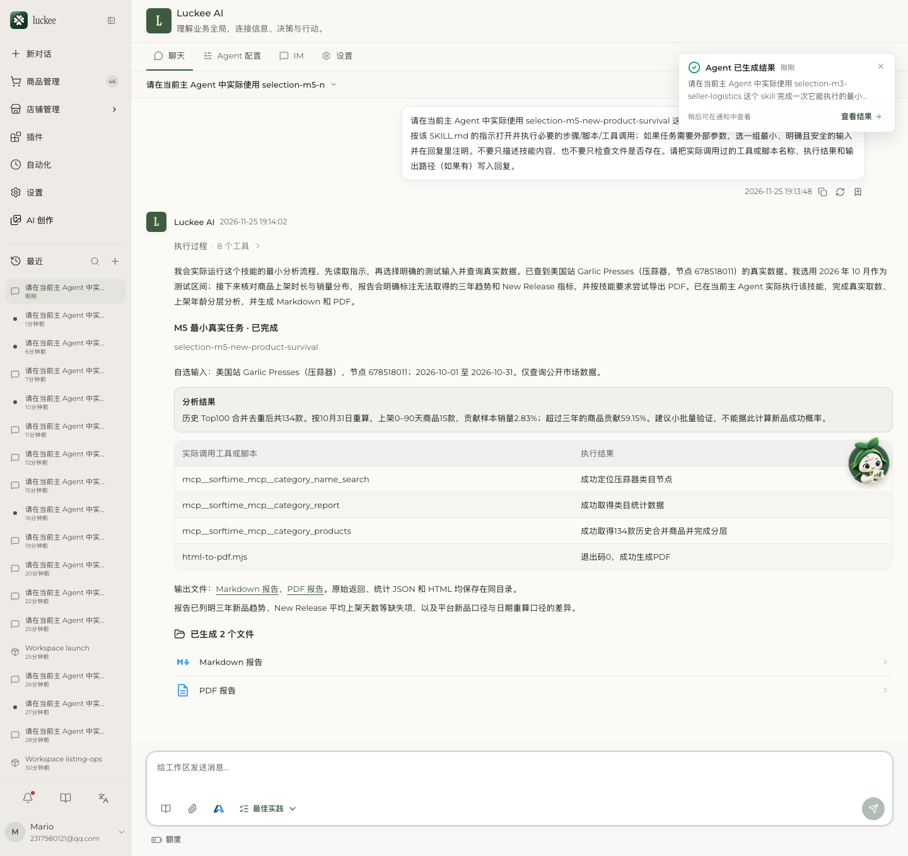
thread: http://34.143.132.97:6466/workspace/main-agent/chat?thread_id=394a29c4-9b80-4d8b-8f32-672cdd26f351
selection-m6-benchmark-teardown
skill-selection-m6-benchmark-teardown
L Luckee AI 2026-11-25 19:16:48 执行过程 · 16 个工具 我会实际使用 selection-m6-benchmark-teardown 技能，先读取执行要求，再选取最小输入完成一次真实查询和报告输出。按你授权的“自行选择最小输入”，本次采用以下参数，不再额外等待确认。同时按该技能要求，使用 selection-competitor-search 确认拆解池。 勾选 参数 本次值 ☑ 站点 US ☑ 模式 指定 ASIN ☑ ASIN B08N5WRWNW（公开商品样本，不代表你的商
Thread 长截图（直接展示）
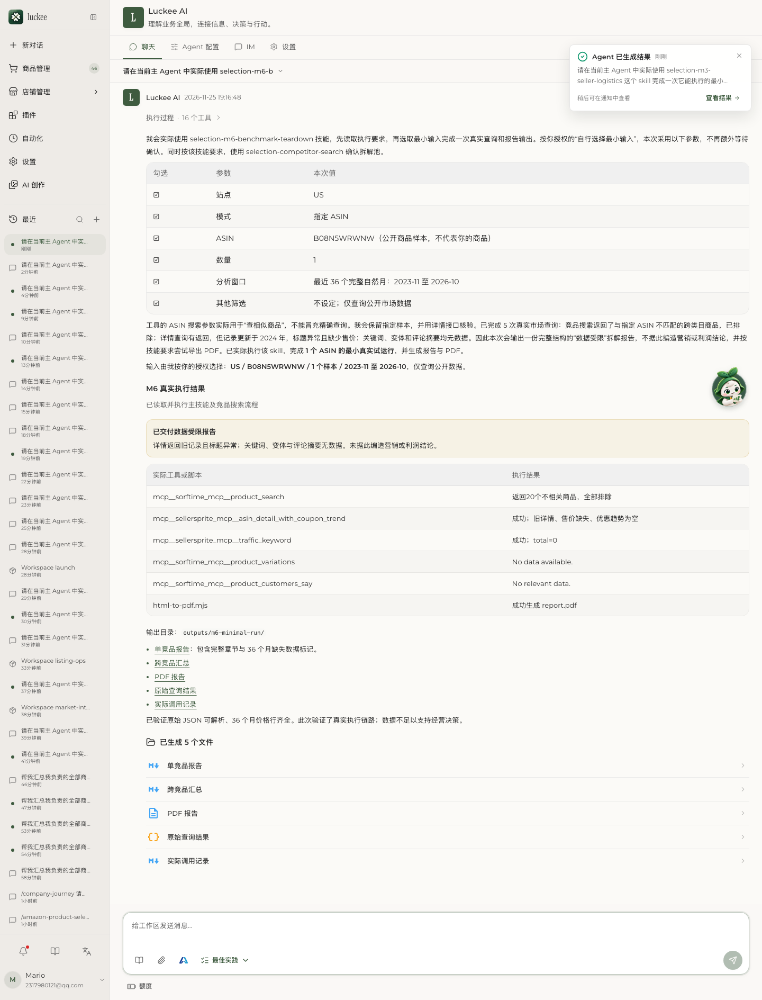
thread: http://34.143.132.97:6466/workspace/main-agent/chat?thread_id=a71982cd-debd-411f-8dbb-648b8c3294f6
violation-detection
skill-violation-detection
L Luckee AI 2026-11-25 19:19:42 执行过程 · 10 个工具 我会直接按 violation-detection 的流程跑一次最小真实检测；先读取技能说明，确认它需要的输入和可用数据工具，再选择最小安全样本执行并汇报实际结果。技能目录没有可执行脚本；它规定的核心是真实调用 SellerSprite 的 asin_detail、keepa_info、asin_prediction，并在美国站尝试评论采集。我采用技能自带案例中的公开 ASIN B0FLPWJ9M2，范围仅一个 ASIN、U
Thread 长截图（直接展示）
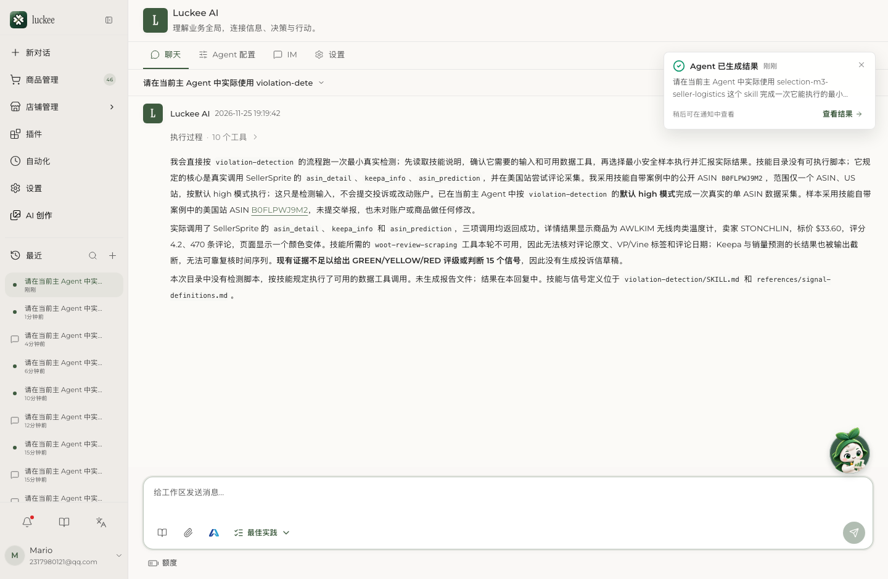
thread: http://34.143.132.97:6466/workspace/main-agent/chat?thread_id=c07f3c3a-0a42-4527-86bd-6ae0359aa967
评测 A-2 · 9 个 MCP 真实调用
共 9 条 · 真实完成 9 条 · 图片全部直接内嵌
amazon-product
mcp-amazon-product
L Luckee AI 2026-11-25 19:58:41 执行过程 · 1 个工具 我会先检查本轮实际挂载的工具，确认 amazon-product.fetch_product 是否可用，再直接查询该 ASIN。amazon-product.fetch_product 已在当前主 Agent 实际调用，查询参数为 ASIN B0GTK8MP5Y、站点 US。工具返回明确错误：HTTP 404 Not Found（success: false，data: null，aplus: null），没有返回商品字段。
Thread 长截图（直接展示）
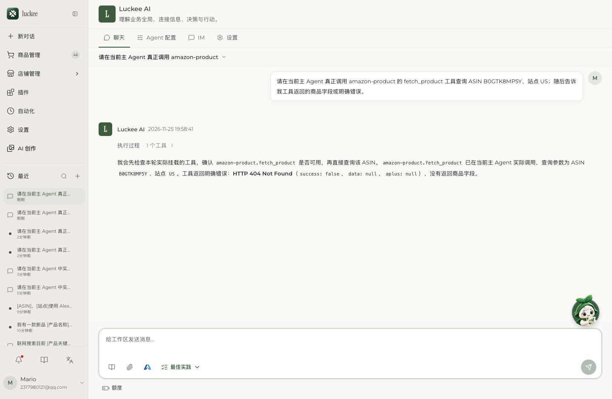
thread: http://34.143.132.97:6466/workspace/main-agent/chat?thread_id=d3b44ad8-2274-47fe-a2ba-c3525bc1707d
amazon_ads_main
mcp-amazon_ads_main
L Luckee AI 2026-11-25 19:25:01 执行过程 · 1 个工具 我会先确认当前可用的 Amazon Ads 工具及 list_campaigns_with_config 的参数要求，再按它的提示用最小日期范围和 profile 执行查询，并原样归纳最终返回。当前主 Agent 没有实际调用到 amazon_ads_main.list_campaigns_with_config：本轮工具目录中没有挂载任何 amazon_ads_main 工具，连接查询也返回 amazonConnection
Thread 长截图（直接展示）
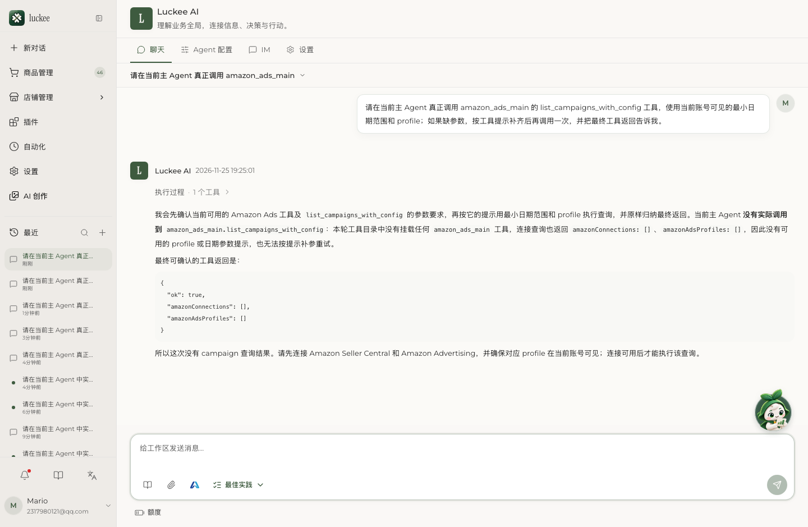
thread: http://34.143.132.97:6466/workspace/main-agent/chat?thread_id=d4645518-8dc7-48e2-be04-f6977c3aefde
display-files
mcp-display-files
L Luckee AI 2026-11-25 19:55:58 执行过程 我会调用当前主 Agent 已挂载的 display-files 服务，登记指定文件并返回工具的原始结果摘要。工具返回： { "accepted": true, "files_to_display": [ { "path": "plugin-availability.txt", "reason": "验证插件文件链路" } ], "file_count": 1 } 已成功登记 1 个文件。
Thread 长截图（直接展示）
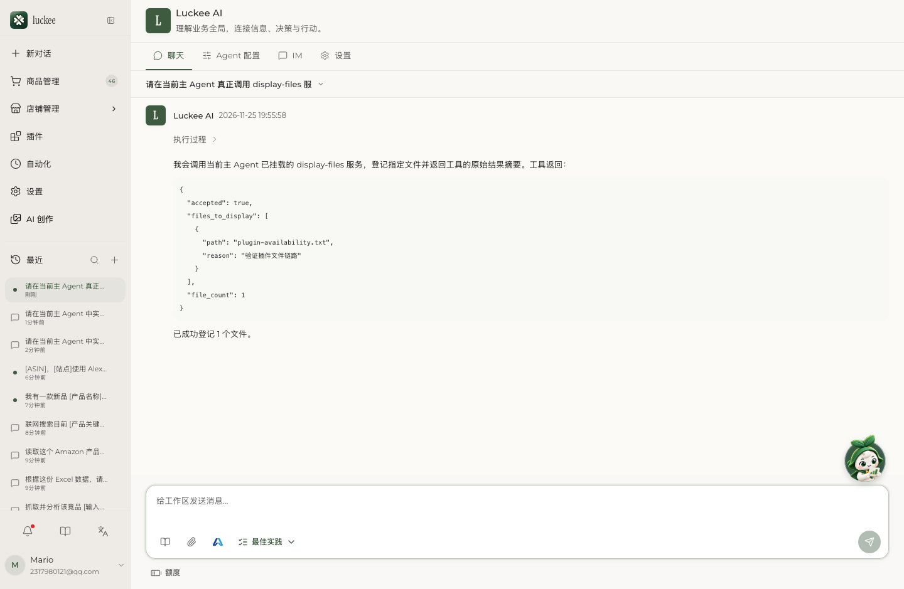
thread: http://34.143.132.97:6466/workspace/main-agent/chat?thread_id=ce3ca5a6-f097-47e3-85f9-784b86a00957
L Luckee AI 2026-11-25 19:57:36 执行过程 · 1 个工具 我现在直接调用当前主 Agent 可用的领星账号查询工具，并按工具实际返回结果反馈。已成功调用 list_lingxing_accounts，工具返回 4 个可见领星账号： Amazon-LanJiAITest（bindingId: 219） Xianfa（bindingId: 114） 15397065925（bindingId: 187） luckeeAI（bindingId: 234） 工具返回状态：ok: true，无
Thread 长截图（直接展示）
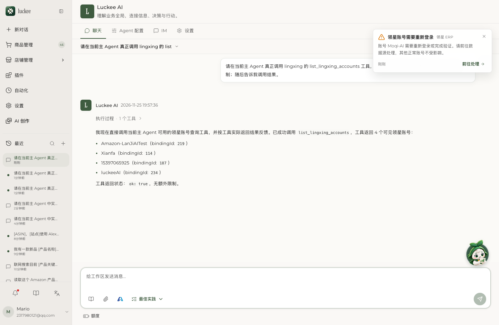
thread: http://34.143.132.97:6466/workspace/main-agent/chat?thread_id=7fa0999e-8967-406c-b980-3a4218423855
luckee_main_agent
mcp-luckee_main_agent
L Luckee AI 2026-11-25 19:22:38 执行过程 · 2 个工具 我会直接调用 luckee_main_agent 的 list_workspaces，列出可见商品工作区，并说明实际返回结构。已在当前主 Agent 实际调用 luckee_main_agent.list_workspaces({})，返回 ok: true。共返回 121 个工作区，其中 46 个有 primaryAsin，75 个该字段为空。 目前可见的商品工作区 以下完整列出 primaryAsin 非空的 46 项；名
Thread 长截图（直接展示）
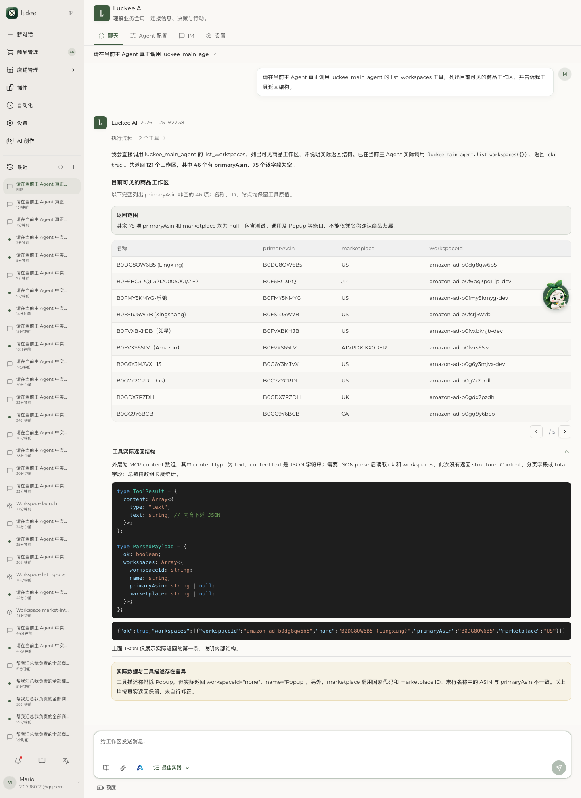
thread: http://34.143.132.97:6466/workspace/main-agent/chat?thread_id=5506a1d6-81f8-4f88-babe-bec9c1f080b0
sellersprite-mcp
mcp-sellersprite-mcp
L Luckee AI 2026-11-25 19:59:40 执行过程 · 1 个工具 我先检查当前已挂载的 SellerSprite 工具，选一个商品或关键词查询接口，用最小参数实际调用并回传原始结果摘要。已实际调用 SellerSprite MCP 工具： 工具名：mcp__sellersprite_mcp__aba_research_trend 最小参数： keyword: wireless earbuds marketplace: US 返回结果：调用成功（code: OK），返回该关键词从 2022-0
Thread 长截图（直接展示）
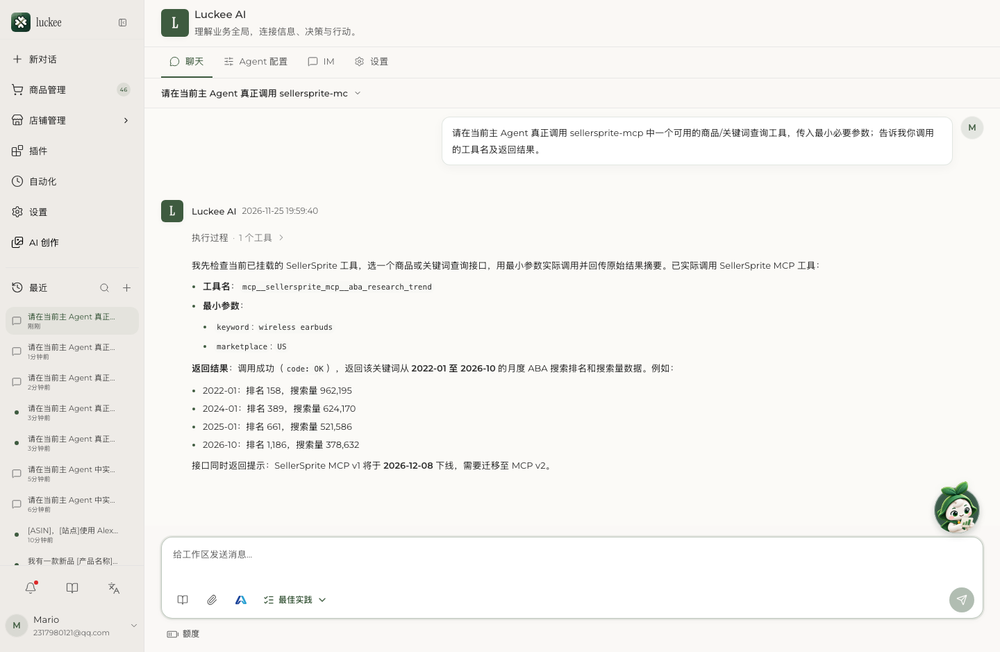
thread: http://34.143.132.97:6466/workspace/main-agent/chat?thread_id=82891661-2213-4982-b35e-f7ea3bffca09
L Luckee AI 2026-11-25 20:01:30 执行过程 · 2 个工具 我会先查看本轮可用的 SIF 工具及其必填参数，再用最小必需输入实际调用一次；如果工具要求关键词或 ASIN，我会选一个能通过参数校验的值，并明确标注是否为示例查询。已实际调用 SIF 工具 mcp__sif_mcp__ops_get_asin_traffic_trend。第一次只传 ASIN 时，接口提示按天查询还需要 lastDays；随后以最小补充参数 lastDays: 7 重试成功。查询使用工具示例 ASIN B01
Thread 长截图（直接展示）
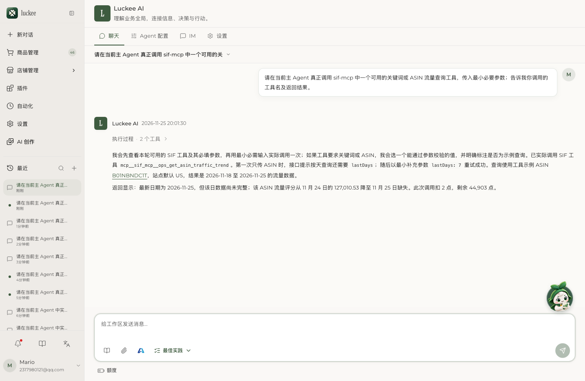
thread: http://34.143.132.97:6466/workspace/main-agent/chat?thread_id=9b1d03d1-987a-4fe6-b652-13b8468b25fe
sorftime-mcp
mcp-sorftime-mcp
L Luckee AI 2026-11-25 20:00:48 执行过程 · 2 个工具 我会先检查本轮实际挂载的 Sorftime 工具及其参数，再用最少必填参数发起一次真实查询，并如实报告工具名和返回结果。第一次调用返回工具提示：需要指定 amz_site。我会按该提示补上美国站点，再用同一查询词重试。已真实调用 Sorftime 工具 mcp__sorftime_mcp__category_search_from_product_name，查询词为 air fryer，站点为 US。 首次仅传查询词时，工具提
Thread 长截图（直接展示）
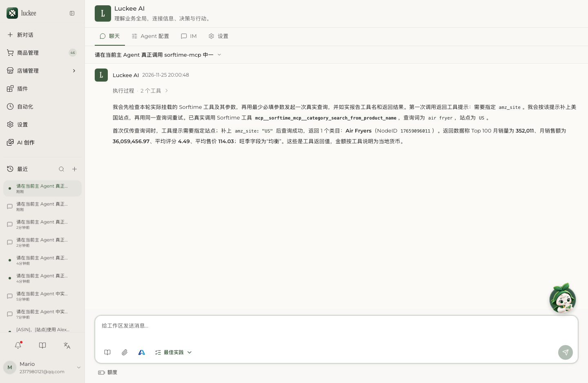
thread: http://34.143.132.97:6466/workspace/main-agent/chat?thread_id=4724dc83-6311-4983-9060-432d8fbba2ca
write-validated-json
mcp-write-validated-json
L Luckee AI 2026-11-25 19:56:55 执行过程 · 1 个工具 我会直接调用当前可用的 write_validated_json 服务，并核对工具返回的实际写入路径。已通过 write_validated_json 工具写入 plugin-availability.json，并按 schema 验证 ok 为布尔值。 工具返回：{"ok": true, "output_path": "plugin-availability.json"}。
Thread 长截图（直接展示）
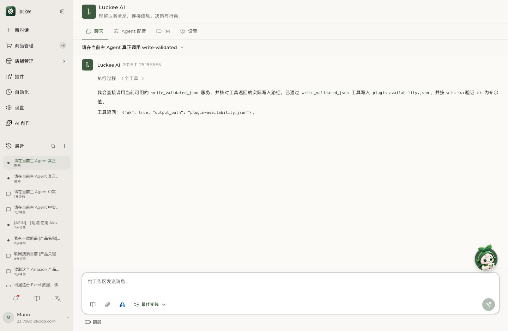
thread: http://34.143.132.97:6466/workspace/main-agent/chat?thread_id=ce7a25bd-bdda-4b06-9e4c-c6debe11d636
评测 B · 19 条模板 Query 功能展示
共 19 条 · 真实完成 8 条 · 图片全部直接内嵌
Amazon 链接解析
template-amazon-link-parsing
L Luckee AI 2026-11-25 20:43:52 执行过程 请把实际 Amazon 商品链接发我；目前的 [粘贴URL] 是占位符。收到链接后，我会整理商品详细参数、Q&A 高频问题和目标受众画像，并输出为 Markdown 报告。
Thread 长截图（直接展示）
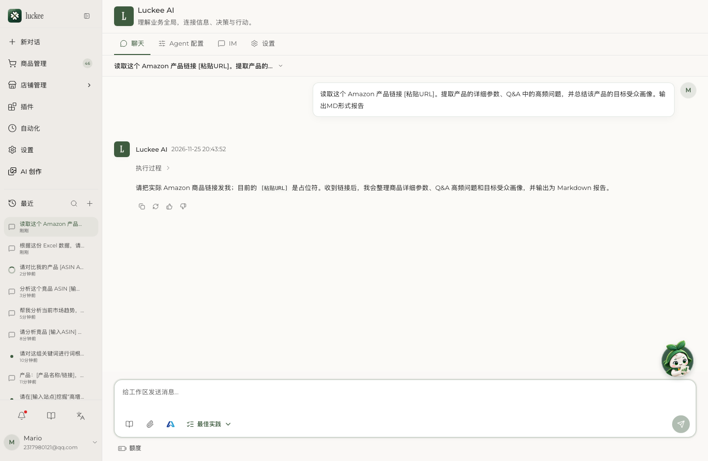
thread: http://34.143.132.97:6466/workspace/main-agent/chat?thread_id=818aeef1-3192-46c2-ba46-6ac055503c95
蓝海掘金 (高增长、低拥挤细分市场挖掘)
template-blue-ocean-opportunity
assistant reply timeout {"articleCount":3,"role":"user","stop":true,"waiting":true}
Thread 长截图（直接展示）
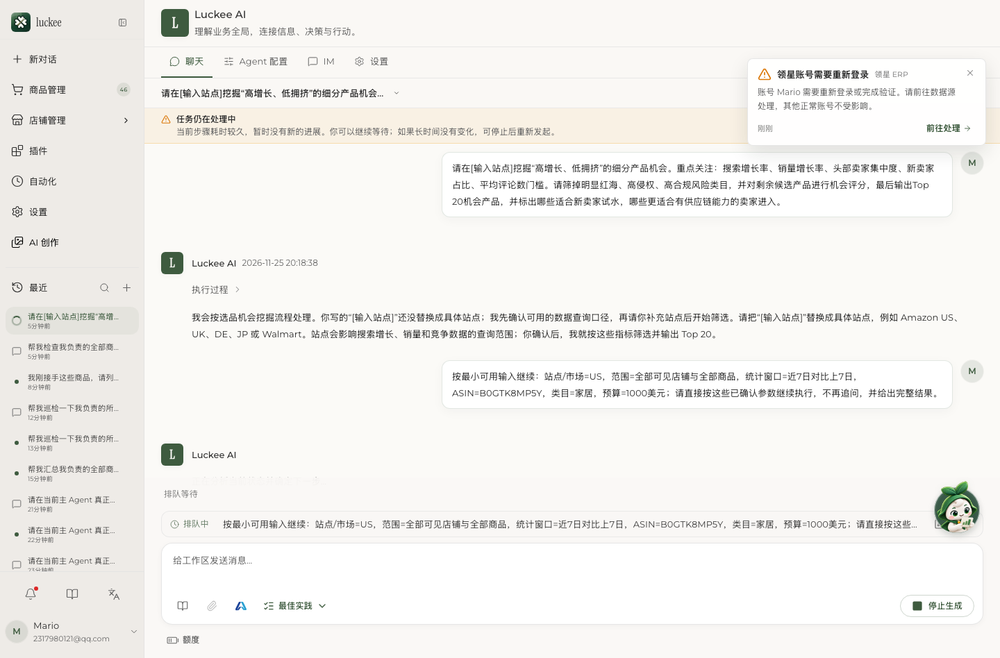
thread: http://34.143.132.97:6466/workspace/main-agent/chat?thread_id=ea57f6a4-9dae-418d-b43c-809511de8b8a
竞品广告策略分析
template-competitor-ad-analysis
L Luckee AI 2026-11-25 20:34:26 执行过程 · 4 个工具 我会按你给定的 US、ASIN 和近 7 日对比上 7 日范围直接查竞品关键词与流量位置，并把“可观测数据”和“策略推断”分开说明。对 B0GTK8MP5Y 的查询没有拿到足以判断关键词根和广告展示位置的数据：卖家精灵两项关键词反查均成功返回，但结果为空；SIF 查到的是历史广告结构，显示 27 个广告活动全部为 SP。以下把已确认信息与目前不能判断的部分分开列出。 竞品广告策略初查 US · B0GTK8MP5Y · 查询于
Thread 长截图（直接展示）
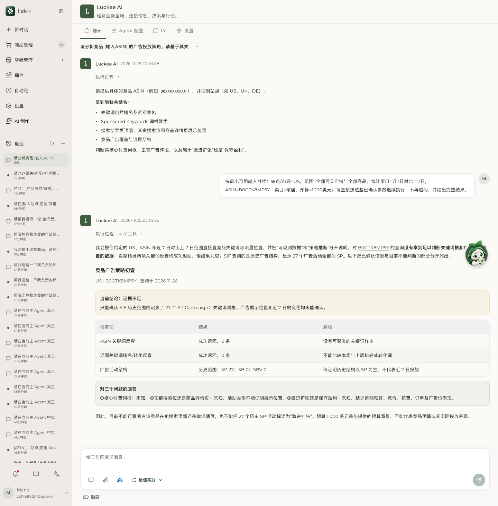
thread: http://34.143.132.97:6466/workspace/main-agent/chat?thread_id=082f7bd9-3a9a-4ac7-a3d5-e14ed5d05a05
多竞品横向对比
template-competitor-comparison
L Luckee AI 2026-11-25 20:41:07 分析中
Thread 长截图（直接展示）
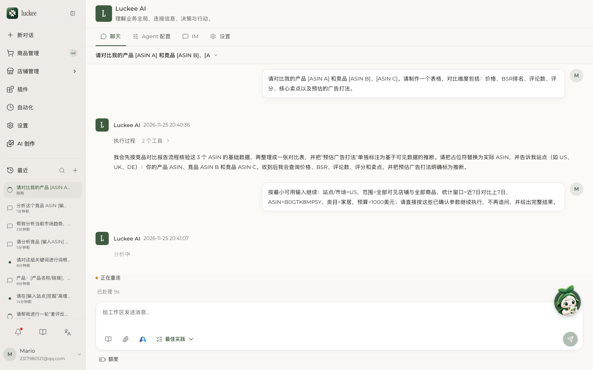
thread: http://34.143.132.97:6466/workspace/main-agent/chat?thread_id=562b073a-ee2c-46c3-806c-c0e453744506
竞品 Listing 与关键词透视
template-competitor-listing-analysis
L Luckee AI 2026-11-25 20:39:11 执行过程 · 8 个工具 我会按已给参数直接查竞品资料与流量证据，并把可验证数据和判断分开呈现。先核对本轮可用的市场数据工具及竞品分析流程；“全部店铺/商品、近7日对比上7日、预算”与竞品 ASIN 诊断的关联范围，我会在结果中说明，避免把卖家自有经营数据误当成竞品数据。已拿到两类 Listing 数据，但存在明显冲突：卖家精灵返回的是“2人/3件套”，Sorftime 返回的五点却写“4人/5件套”。流量关键词与 SP 广告结构查询目前均为空；我再用
Thread 长截图（直接展示）
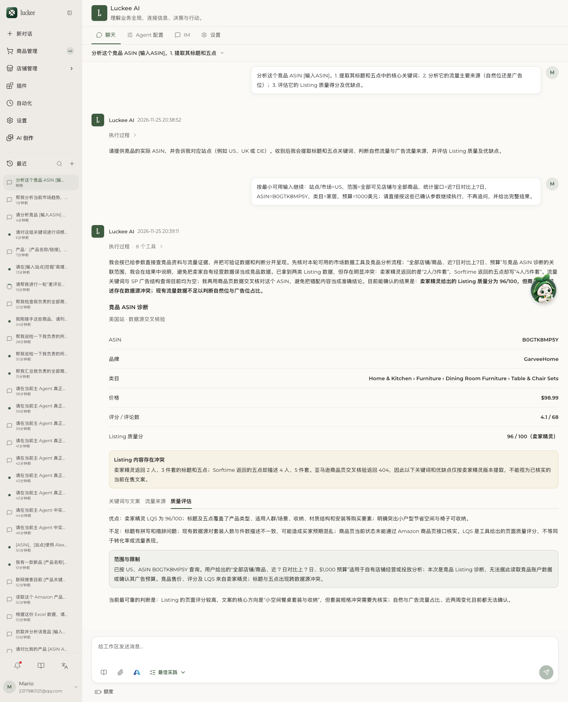
thread: http://34.143.132.97:6466/workspace/main-agent/chat?thread_id=341ba928-141f-499d-9374-032d33198f20
评论分析 (痛点识别)
template-competitor-review-analysis
locator.waitFor: Timeout 90000ms exceeded. Call log: �[2m - waiting for getByPlaceholder(/描述你想解决的问题|Ask a question/i) to be visible�[22m
Thread 长截图（直接展示）
thread: 未生成（首页加载异常）
数据可视化描述
template-data-visualization-analysis
L Luckee AI 2026-11-25 20:43:09 执行过程 · 3 个工具 我先检查工作区里的 Excel 文件和可用表格读取工具，再根据实际数据概括趋势、峰值时段与广告花费和销售额的关系。我在当前工作区没有找到 Excel 文件或可读取的表格附件，因此还无法判断销售趋势、销售高峰或广告花费与销售额的相关性。请把 Excel 文件上传到对话中，或放到工作区后告诉我文件名；拿到数据后我会计算相关性并给你趋势图或绘图代码。
Thread 长截图（直接展示）
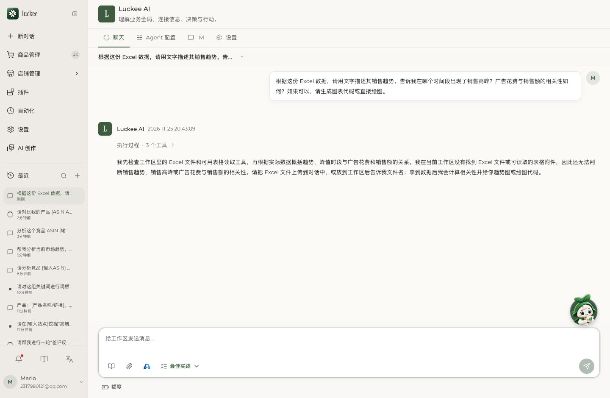
thread: http://34.143.132.97:6466/workspace/main-agent/chat?thread_id=b212861c-60f8-4728-9622-b31d417aa758
入场决策 (特定类目/产品商业可行性诊断)
template-entry-feasibility
L Luckee AI 2026-11-25 20:30:22 执行过程 · 18 个工具 收到：ASIN 为 B0GTK8MP5Y，US、家居、预算 $1,000，窗口为近 7 日对比前 7 日，范围按你给定。你已明确要求完整诊断，我按全部模块继续；先核实当前可用的市场数据工具和该 ASIN 对应类目。初步结论：暂不建议用 $1,000 预算直接备货入场。 US 站细分类目有可观销售，但该 ASIN 当前价格、利润和近 14 日销量数据不足以验证单品经济性；家具套装的运费、破损和退货成本也尚未核实。全店经营数据暂
Thread 长截图（直接展示）
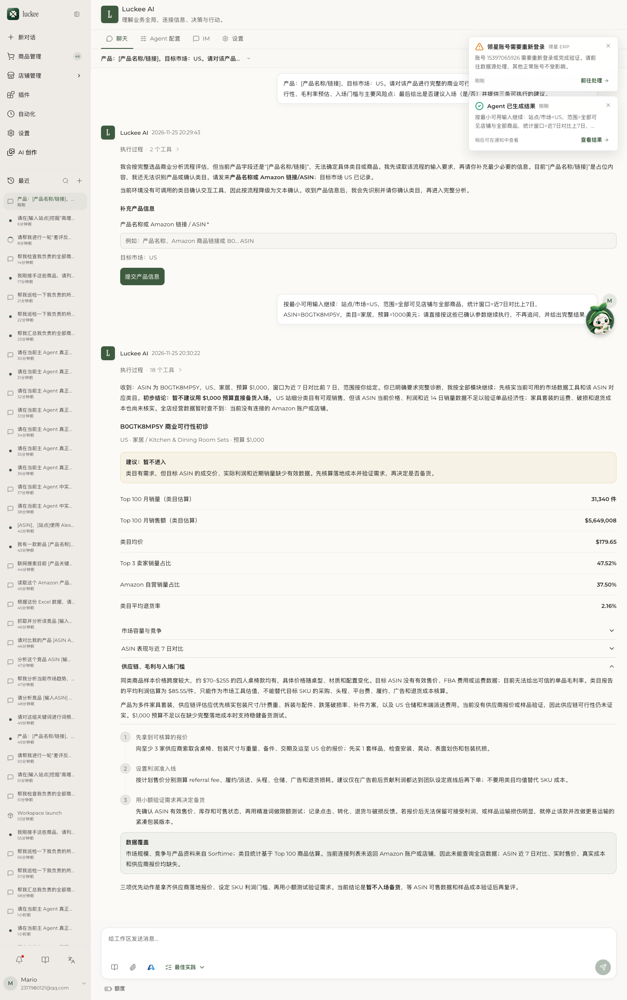
thread: http://34.143.132.97:6466/workspace/main-agent/chat?thread_id=92bb0039-1923-4c7e-a4d0-04d5e90ab028
行业趋势搜索
template-industry-trend-search
L Luckee AI 2026-11-25 20:44:34 执行过程 · 16 个工具 我会先核对这个 ASIN 对应的商品，再按你给的美国市场、家居类目和预算范围查近两周可用的经营与市场信息。若某项数据源不支持该时间窗口或范围，我会把缺口单独标明。已按 ASIN B0GTK8MP5Y 定位为美国站 GarveeHome 四人餐桌椅套装。趋势证据支持“暖木色、适配小空间、收纳与耐用性”作为值得关注的方向；但店铺近 7 日对比、该商品近期销量和 TikTok 热点都无法从本轮数据源确认，报告中已标出范围限制。 美
Thread 长截图（直接展示）
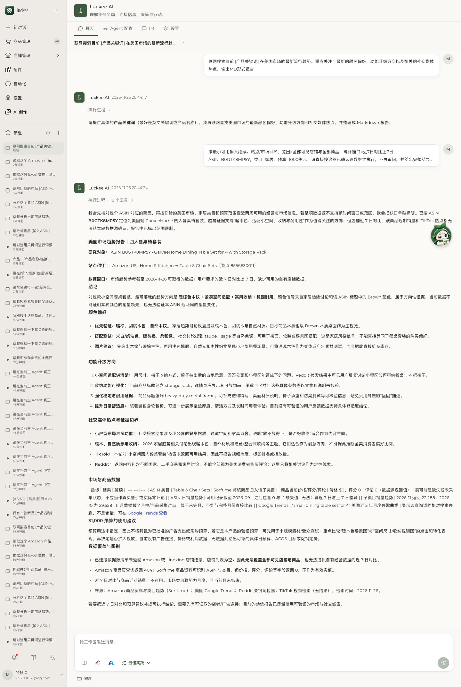
thread: http://34.143.132.97:6466/workspace/main-agent/chat?thread_id=46c67707-10d5-4259-b38e-2cff09460929
词根分析：高频属性拆解
template-keyword-root-analysis
L Luckee AI 2026-11-25 20:33:06 执行过程 请把这组关键词发给我（可直接粘贴，或上传 Excel/CSV）。为了评估“转化效果”，最好同时包含： 关键词 搜索量或曝光量 点击量 订单量/转化率 匹配类型或投放位置（如有） 我会输出： 词根拆解与归并规则 各词根出现频率排名 按订单量、转化率和流量加权的效果排名 高频但低转化的词根，以及高转化但尚未充分覆盖的词根 Listing 标题、五点、描述和 Search Terms 的词根布局建议 目前没有看到具体关键词数据，因此还不能可靠统计频
Thread 长截图（直接展示）
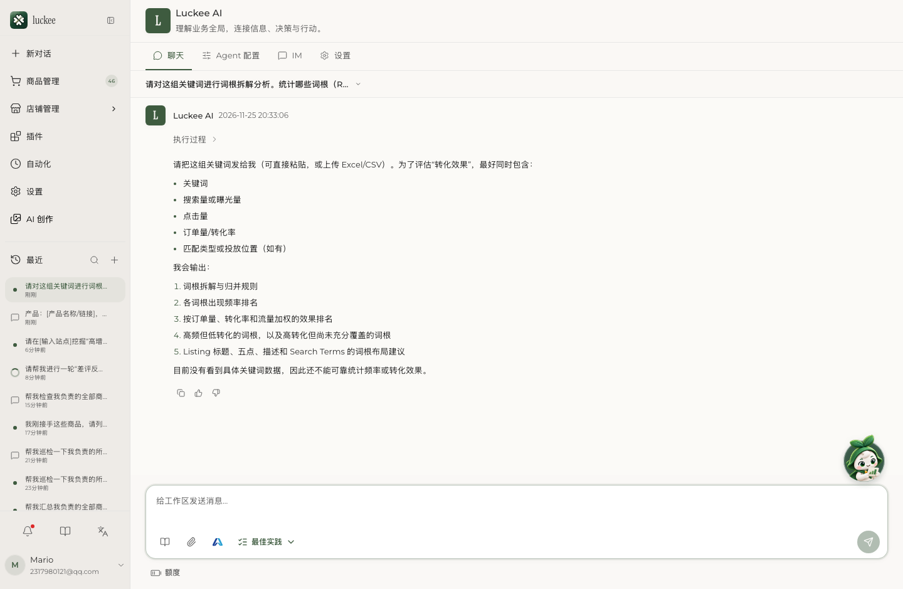
thread: http://34.143.132.97:6466/workspace/main-agent/chat?thread_id=8fe6d7be-2670-4d8f-af34-0604ed99719a
帮我了解我负责的商品
template-main-agent-product-portfolio-overview
L Luckee AI 2026-11-25 20:14:33 执行过程 · 2 个工具 我将按你确认的 US、B0GTK8MP5Y、近 7 日对比上 7 日执行；这属于店铺/广告巡检场景，我先按 store-inspection-agent 的取数与核验流程查询可用连接和数据。已按确认参数锁定： 站点：US 范围：全部可见店铺与商品 目标 ASIN：B0GTK8MP5Y 类目：家居 预算：$1,000 统计窗口：近 7 个完整数据日对比上 7 日（按当前日期，暂按 11/17–11/23 对比 11/10–11/
Thread 长截图（直接展示）
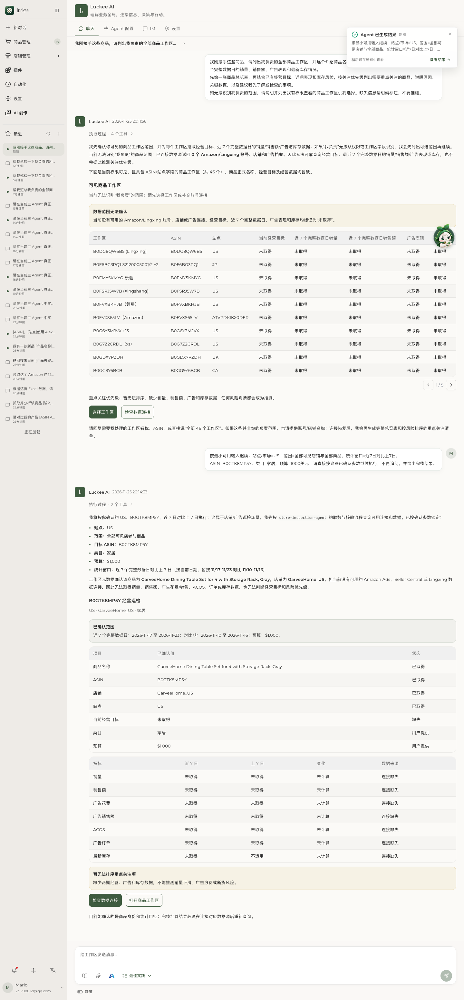
thread: http://34.143.132.97:6466/workspace/main-agent/chat?thread_id=dcc5e3bf-1665-40b1-b85a-ad5b678cefdb
今天有哪些事情需要我处理？
template-main-agent-today-priorities
L Luckee AI 2026-11-25 20:17:24 执行过程 · 12 个工具 我会沿用你给定的范围直接重查：US、全部可见店铺与商品、近 7 日对比上 7 日，并重点核对 B0GTK8MP5Y、家居类目和 $1,000 预算。先检查当前连接与可用数据；若业务数据源仍未连接，我会明确列出实际拿到的结果和缺口，不用工作区名称或假设值补数。按你确认的范围完成了可用数据核查。目前没有证据能确认具体广告或销量异常，也无法据此判定商品健康：US 店铺连接为空，B0GTK8MP5Y 的近 7 日与上 7 日指标均缺
Thread 长截图（直接展示）
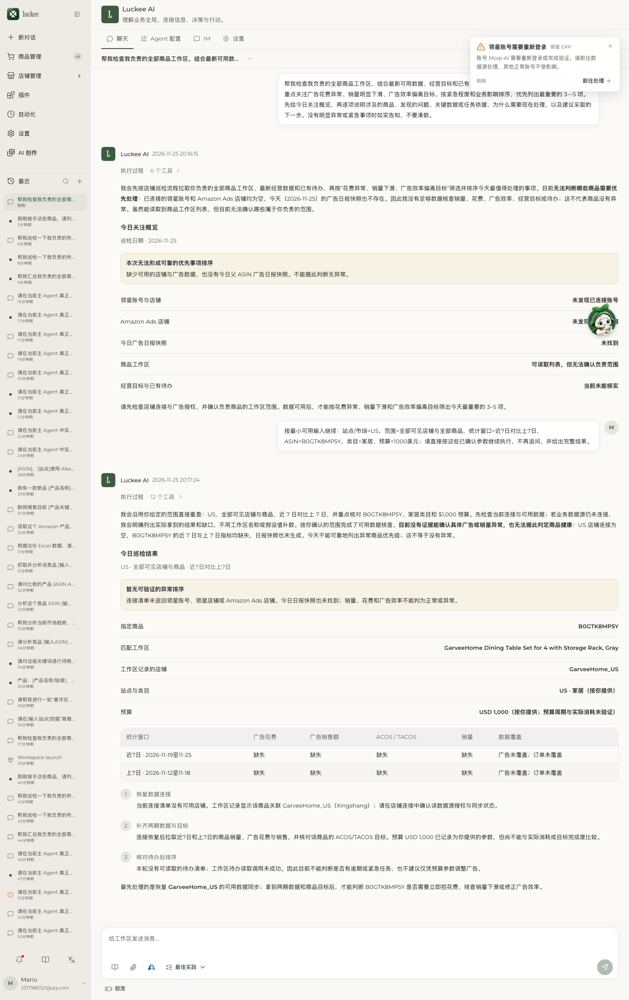
thread: http://34.143.132.97:6466/workspace/main-agent/chat?thread_id=290b4e45-b28d-4312-8f45-63ca019b03cc
本周整体表现怎么样？
template-main-agent-weekly-business-review
assistant reply timeout {"articleCount":3,"role":"user","stop":true,"waiting":true}
Thread 长截图（直接展示）
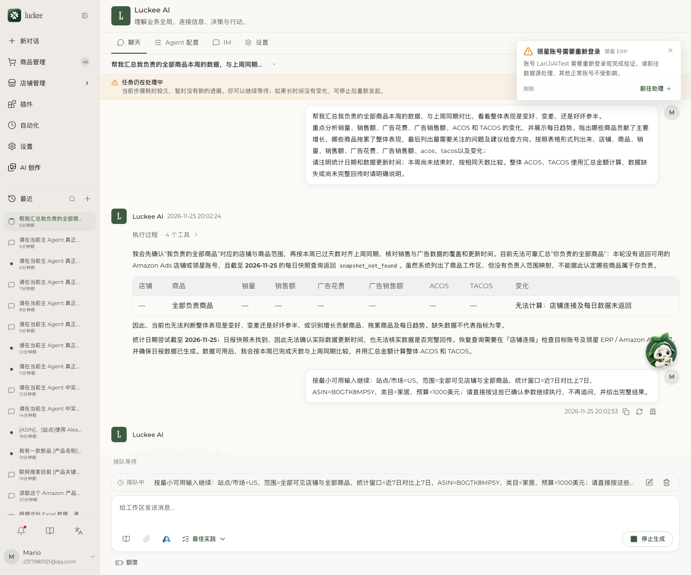
thread: http://34.143.132.97:6466/workspace/main-agent/chat?thread_id=067a1a76-20ce-4182-9c15-5172a25f6fe4
市场趋势洞察
template-market-trend
L Luckee AI 2026-11-25 20:36:32 执行过程 · 17 个工具 我将按已确认的 US、家居类目、ASIN B0GTK8MP5Y、近 7 日对比上 7 日、预算 $1,000 执行市场趋势与竞争机会分析，并结合可用的 SellerSprite/Sorftime 数据返回完整结果。ASIN 已识别为小户型 2 人餐桌椅套装（Home & Kitchen / Table & Chair Sets），不是泛家居。上周和上上周的逐日店铺数据无法从市场研究接口直接取得；我会把该口径与可取到的类目历史
Thread 长截图（直接展示）
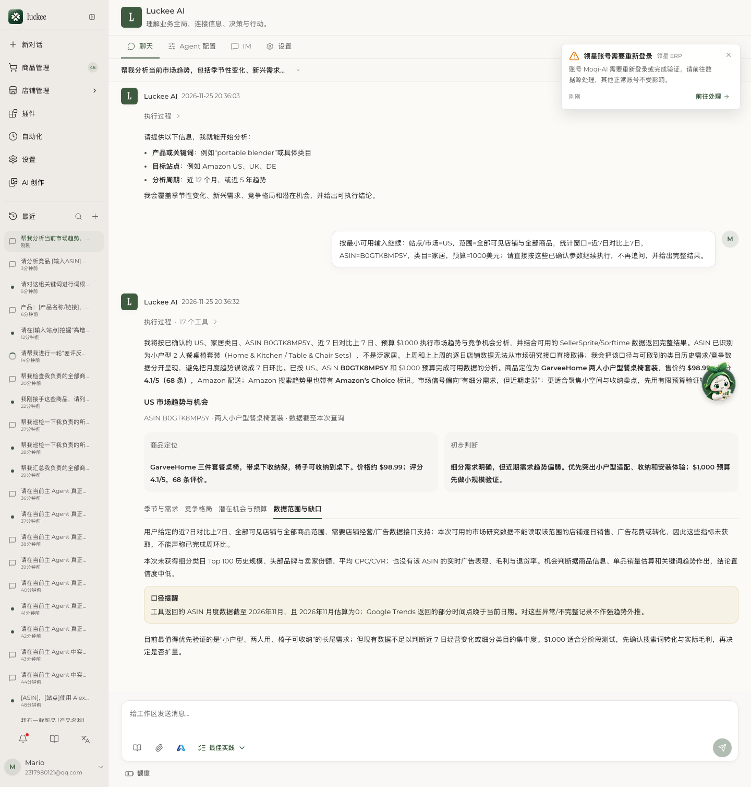
thread: http://34.143.132.97:6466/workspace/main-agent/chat?thread_id=cd394b32-1fe4-4867-b9a0-ac47c1263695
差评反推 (痛点驱动型选品与产品升级)
template-negative-review-backtrace
assistant reply timeout {"articleCount":4,"role":null,"stop":true,"waiting":true}
Thread 长截图（直接展示）
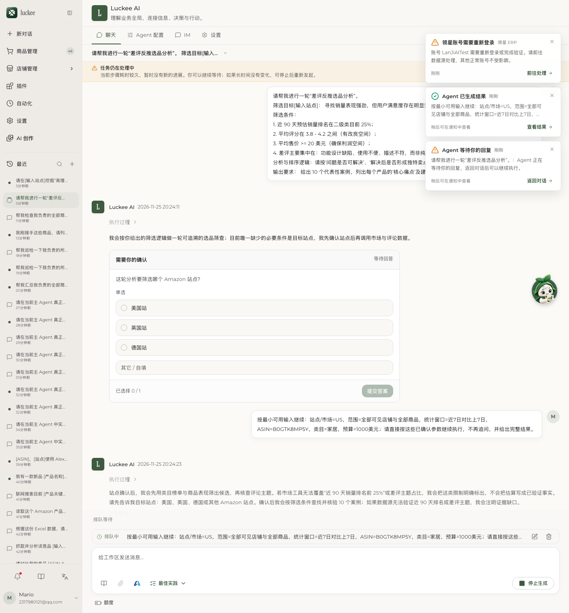
thread: http://34.143.132.97:6466/workspace/main-agent/chat?thread_id=62199ebb-4903-4457-ae2a-a90200d48dd9
新品推广策略
template-new-product-launch
assistant reply timeout {"articleCount":3,"role":"user","stop":true,"waiting":true}
Thread 长截图（直接展示）
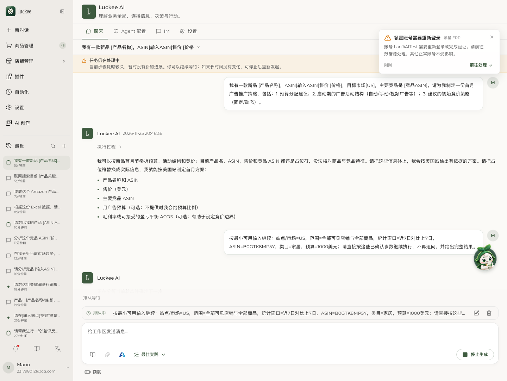
thread: http://34.143.132.97:6466/workspace/main-agent/chat?thread_id=e0d1f91b-1d67-4c24-ad53-6c1ba8510593
Alexa 语义资产审计（原 Rufus）：AI 时代 Listing 竞争力诊断
template-rufus-semantic-asset-audit
L Luckee AI 2026-11-25 20:52:42 请提供具体的 **ASIN 和站点**，例如：`B0XXXXXXXX，US`。也可以直接发送 Amazon 商品链接。
Thread 长截图（直接展示）
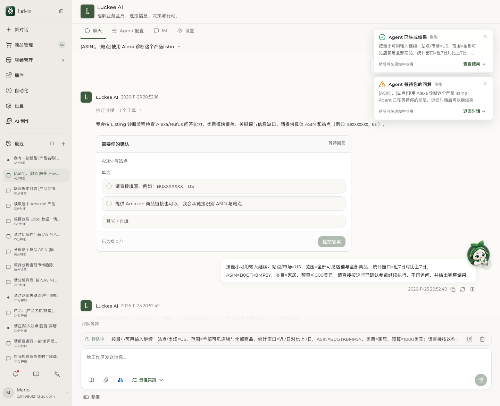
thread: http://34.143.132.97:6466/workspace/main-agent/chat?thread_id=413e1d7c-4b13-4a6e-9749-55f914159668
店铺广告活动巡检
template-store-inspection-campaign
L Luckee AI 2026-11-25 20:08:24 执行过程 · 4 个工具 我会按店铺广告巡检流程拉取你负责的 campaign，分别计算近 7 日与上 7 日的广告花费、广告销量和 ACOS，筛出变化超过阈值的重点 campaign，并生成 HTML 巡检报告。先读取本轮巡检规范和可用连接。目前查到的连接结果为空：没有可用的领星账号/店铺，也没有 Amazon Ads 店铺或广告档案，所以我无法识别你负责的 campaign 或拉取两段 7 日数据；本次也就无法生成有数据依据的 HTML 巡检报告。
Thread 长截图（直接展示）
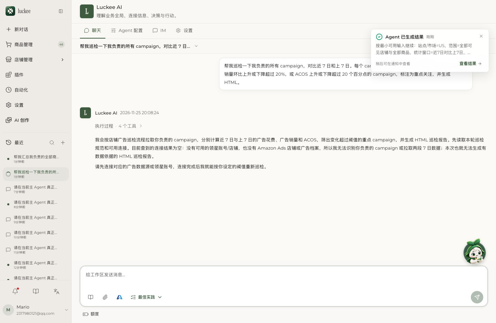
thread: http://34.143.132.97:6466/workspace/main-agent/chat?thread_id=3afeba67-abbf-41d0-bc9a-cbb7d6378bce
店铺经营巡检
template-store-inspection-operations
L Luckee AI 2026-11-25 20:11:05 执行过程 · 3 个工具 你补充的 ASIN 和 US 范围足以尝试单品数据查询；我会先重新核对当前可见店铺，并检查该 ASIN 工作区是否有近 14 日指标。巡检报告仍需通过技能指定的完整商品范围和固定核验流程生成，我会据实区分单品数据与全店巡检结果。按你提供的范围检查后，目前无法生成完整巡检结果或 HTML：可见店铺清单为空，指定 ASIN 的工作区也没有广告或订单数据覆盖。两期的总销量、广告销量、广告花费和 ACOS 均未返回数据，不能据此计算变
Thread 长截图（直接展示）
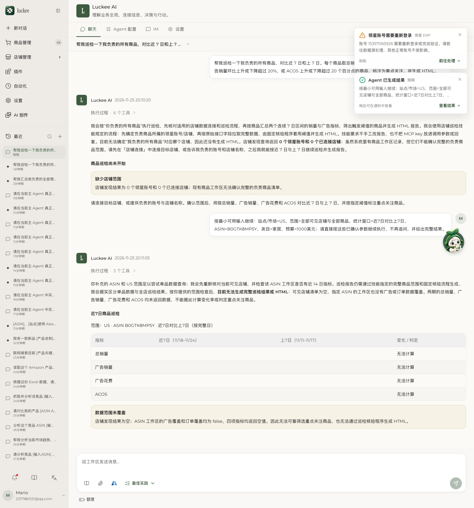
thread: http://34.143.132.97:6466/workspace/main-agent/chat?thread_id=00f403ed-1e2a-48e8-bdea-e3a76460f52f